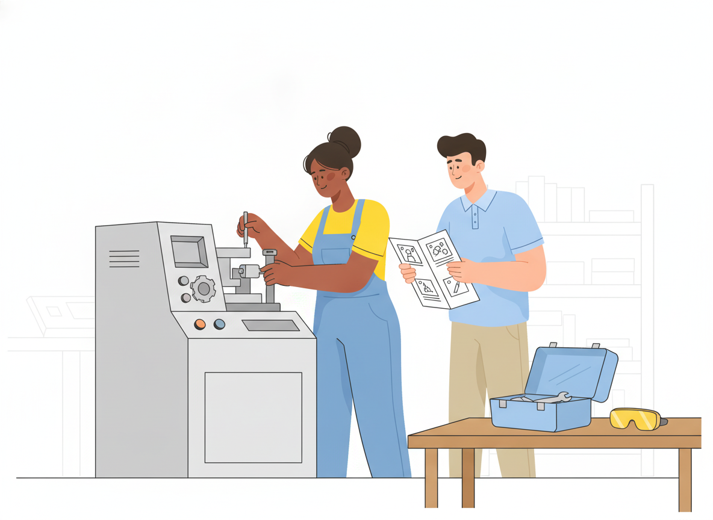

Work Instructions: What They Are and How to Write Them
Your policies say what the organization intends. Your SOPs describe how a process runs. But picture someone at a machine, a lab bench, or a service desk with a task in front of them. They don't reach for either document. They reach for a work instruction, or they ask the person next to them.
This guide explains what work instructions are, how they differ from SOPs, which format works, and how to write steps people actually follow. It also covers how to keep instructions current once they are live.
What are work instructions?
Work instructions are short, task-level documents that tell one person how to complete one specific job, step by step, at the place where the work happens. They sit below policies and procedures in a quality system and turn a procedure into actions someone can follow without guessing.
The World Health Organization's laboratory quality guidance describes them plainly: work instructions, or job aids, are shortened versions of SOPs that can be posted at the workstation for easy reference. They are meant to supplement the SOP, not replace it.
Where work instructions fit in the documentation hierarchy
Most quality systems organize documents in layers. The labels vary between organizations, but the shape is consistent:
- Policies — what the organization intends to do, in broad terms.
- Processes — how work flows from inputs to outputs.
- Procedures (SOPs) — the detailed activities that make up a process.
- Work instructions — the condensed, step-by-step "how" for a single task.
- Forms and records — forms capture results; once completed, they become records.
WHO's guidance pictures this as a tree. Policies are the roots, processes are the trunk, and procedures are the leaves. Work instructions grow out of those procedures. Each layer gets more specific and is used by more people more often.
If you already have written policies and procedures, work instructions are usually where most of the day-to-day reading happens. That also makes them the place where small errors get repeated most often.
Work instructions vs SOPs: what's the difference?
The two are easy to confuse because both contain steps. The difference is scope and audience.
| SOP (procedure) | Work instruction | |
|---|---|---|
| Scope | A whole activity or process | One task within that activity |
| Answers | Who does what, when, and in what order | Exactly how to do this task |
| Reader | Everyone involved, including managers and auditors | The person doing the task |
| Where it's used | At a desk, in training, during audits | At the point of work |
| Length | Often several pages | Often one screen or page |
A simple test: if the document coordinates several roles, it's a procedure. If it guides one person's hands through one job, it's a work instruction.
Keep them linked. Each work instruction should name its parent SOP, and each SOP should list the work instructions that support it. When one changes, you'll know what else to check.
A work instruction format that works
A consistent work instruction format matters more than any single design choice. WHO's guidance recommends a standard outline so the structure is familiar to staff and easy for new people to use. A practical template includes:
- Title — the task, phrased as an action ("Replace the filter cartridge on Line 2").
- ID and version — so people can tell whether they are reading the current one.
- Parent procedure — the SOP this instruction supports.
- Scope — which equipment, product, or location it applies to.
- Who performs it — the role, plus any required training.
- Before you start — tools, materials, protective equipment, and safety warnings.
- Steps — numbered, one action each, with visuals where they help.
- Check — how the person knows the task was done correctly.
- What to do if something goes wrong — who to contact or which instruction to follow next.
- Owner and approval — who maintains it and who signed it off.
Put warnings before the step they apply to, not after. A warning someone reads after they've acted doesn't help them.
If you'd rather not start from a blank page, Sonat's free documentation templates give you a ready-made structure to adapt.
How to write work instructions people actually follow
Work instructions usually go wrong in a few predictable ways: they are too long, too vague, or written for the author instead of the reader. These habits help.
Write one action per step
Start each step with a verb: "Turn," "Check," "Record," "Remove." Keep it to one action. If a step contains "and then," split it in two.
Keep sentences short and active
Plain-language guidance from Nielsen Norman Group suggests sentences of no more than 15 to 20 words. That advice holds even for expert readers, who also prefer text that is quick to scan. Digital.gov's plain-language guide adds two more habits: use active voice and cut unnecessary words. "Close valve B" beats "Valve B should be closed by the operator."
Be explicit, not approximate
"Tighten firmly" means something different to every person. Give the value, the tool setting, or the visual cue that shows the step is done. WHO's guidance asks for documents that are explicit and accurate and that reflect how the work is really done.
Explain the "why" at critical steps
Not every step needs a reason, but the ones that protect safety or quality do. A short reason after a critical step ("so the seal seats evenly") tells people why the step matters. When they understand it, they are less likely to "improve" it or skip it under time pressure.
Test the draft with someone new
Hand the draft to someone who hasn't done the task and watch them use it. Every place they hesitate, ask a question, or improvise is a gap in the instruction.
Visual work instructions: show, don't just tell

For hands-on tasks, a photo or diagram often does more than a paragraph. Visual work instructions pair each step with an image of what the person should see: the correct part, the right orientation, the finished result.
Some practical rules:
- Use one image per step when the step involves orientation, placement, or a visual check.
- Shoot from the worker's point of view, not from across the room.
- Mark what matters with arrows or circles, and keep the rest of the image uncluttered.
- Show the wrong result too when a common mistake looks almost right.
- Use short video clips for motions that are hard to capture in a still image.
Visuals also help mixed-language teams. An image needs less translation than a sentence, though the text around it still should be translated.
Work instructions for manufacturing and the shop floor
Manufacturing is where standard work instructions are most familiar, and where the gap between "documented" and "followed" shows most quickly.
Two lessons from lean practice are worth borrowing anywhere:
- Training is part of the document. The Training Within Industry Job Instruction method uses four steps: prepare the worker, present the job, try out the job, and follow up. The Lean Enterprise Institute teaches it with a Job Breakdown Sheet that turns a task into clear, step-by-step instructions. Its writing also calls repeated demonstration with explanation critical to helping workers adapt to standardized work. A work instruction is the script for that training, not a substitute for it.
- The instruction must be where the work is. WHO's guidance makes the same point for laboratories: post the job aid in clear view of the workspace. That can be a printed sheet, or a tablet or phone at the station that always shows the current version.
Regulation is opening the door to digital instructions as well. The EU Machinery Regulation, which applies from 20 January 2027, allows manufacturers to provide instructions for use in digital format. If your team writes machinery documentation for the EU market, that makes a strong case for keeping instructions online and under version control. Check the regulation's detailed conditions for digital delivery with your compliance team.
Keeping work instructions current
A work instruction that no longer matches the job is worse than none, because people trust it. WHO's guidance sums up the rule in one line: "Do what you wrote and write what you are doing."
Build these habits into your process:
- Version every change and keep the history, so you can see what changed and when.
- Route changes through approval before they go live, especially for safety- or quality-critical tasks.
- Retire old copies wherever they live, including printed sheets taped to equipment.
- Collect feedback at the point of use. The people doing the job are the first to notice when a step is wrong.
- Review on a schedule and whenever equipment, materials, or the parent procedure changes.
This is also where tooling matters. In Sonat, teams write instructions in Google Docs or the built-in editor. They can then route changes through approval workflows and publish to a mobile-friendly viewer the team can open at the workstation. Sonat keeps every version, collects reader feedback on each topic, and can translate instructions for multilingual teams. Variants let you keep one instruction per machine model or product edition without copying everything by hand.
Conclusion
Good work instructions are short, specific, and close to the work. They take one task from an SOP and turn it into steps one person can follow without guessing. They're tested with real users, supported by visuals, and kept in step with how the job is actually done.
Start small. Pick the task that causes the most questions or rework, write one clear instruction for it with the format above, and watch someone use it. If you want a place to write, approve, and publish instructions without technical setup, you can try Sonat for free.